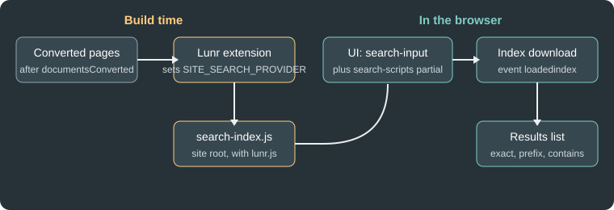

Site Search
|
This content was generated with the assistance of AI and should be verified against the official documentation before being relied on in production. |
This page was written against Antora 3.2.1 and @antora/lunr-extension 1.0.0-alpha.13 and checked on 2026-10-26. Antora does
not ship a search engine. The generated site is a set of static files, so search has to be added as an extension that
builds an index during the run and a script that queries it in the browser. The official option is the Lunr extension;
sites that outgrow it usually move to Pagefind or to Algolia DocSearch.
The Irurueta Docs site has its Lunr extension commented out in the playbook, so site search is currently disabled there. Upgrading this site (Lunr performance, Pagefind, Algolia DocSearch) is tracked in issue #255 and is not part of this page.
How Lunr search works in Antora
The extension runs during the site build and writes one file, search-index.js, to the root of the published site. The file
contains the Lunr index (a pre-built inverted index over the page titles, names, text, component and keywords) wrapped in a call
that hands it to the search UI script. Searching happens entirely in the browser, so no server and no external service is
needed. Result links are relative to the current page, which means search works wherever the site is hosted, including
from a file: URL, and does not depend on site.url.

The figure shows the two halves: the extension produces the index and the UI wires an input to it.
Installing and registering
npm i -D -E @antora/lunr-extension@1.0.0-alpha.13Source: Antora Lunr Extension README
The README lists Node.js 20 or newer and Antora 3.2 or newer as prerequisites. Antora earlier than 3.0 is not supported; those
sites use the older antora-lunr project, which is configured with environment variables instead of playbook keys. The
version published to npm is a pre-release (1.0.0-alpha.13, published 2026-02-02), so pin it exactly as above.
Register the extension in antora.extensions. The quotes are required because @ is a special character in YAML:
site:
title: Pocket Units Docs
url: https://docs.example.org
start_page: pocket-units::index.adoc
antora:
extensions:
- '@antora/lunr-extension'
content:
sources:
- url: https://github.com/example/pocket-units.git
branches: [v1.0, v2.0]
ui:
bundle:
url: https://gitlab.com/antora/antora-ui-default/-/jobs/artifacts/HEAD/raw/build/ui-bundle.zip?job=bundle-stable
snapshot: trueSource: Antora Lunr Extension README
To pass options, use the map form, where the package name is the value of require and the options are its siblings. The extension
can also be enabled for a single run without editing the playbook:
npx antora --extension @antora/lunr-extension antora-playbook.ymlSource: Antora Lunr Extension README
This example was run against the Pocket Units sample (a local Git repository with branch v2.0, Antora 3.2.1 and the Default UI
built from source). The build wrote search-index.js at the site root, the page footer loaded lunr.js, search-index.js
and search-ui.js, and the navbar contained the search field:
<input id="search-input" type="text" placeholder="Search the docs" autofocus>The first characters of the generated file show how the index is handed to the browser script:
antoraSearch.initSearch(lunr, {"index":{"version":"2.3.9","fields":["title","name","text","component","keyword"], ...Options
All options are siblings of require in the map form.
| Option | Default | Meaning |
|---|---|---|
|
not set (every version is indexed) |
When |
|
|
When |
|
100 |
Maximum number of characters in the snippet shown under a result. It may be shorter when the matched text is shorter. |
|
English only |
List of language codes to index. Supported codes are ar, zh, da, nl, fi, fr, de, hi, hu, it, ja, no, pt, ro, ru, es, sv, th, tr and vi.
Chinese needs the extra package |
|
none |
Extra words that are ignored by the index. Set it at the top level for every language, or nest it under a language code inside |
A complete example using the options, as it was run for this page:
antora:
extensions:
- require: '@antora/lunr-extension'
index_latest_only: true
index_by_heading: true
snippet_length: 150
languages:
- en
- es
- frSource: Antora Lunr Extension README
Only index_latest_only and snippet_length were executed in the sample build above. The multi-language and index_by_heading
form shown here was not executed. The README also describes nesting extra_stop_words under a language code, but this page
does not show that form because its exact shape was not run.
Excluding pages from the index
-
Per page: set the
noindexattribute in the AsciiDoc header. -
Per component version: set
noindex: '@'underasciidoc.attributesinantora.yml. The@makes it a soft set, so a page can override it. -
Pages not written in AsciiDoc, or generated from templates: the indexer honours a
robotsmeta tag whose content isnoindex.
The UI contract
The extension is only half of the feature. The UI bundle has to cooperate, and the Antora Default UI already does. A custom UI must provide the following:
-
Check
env.SITE_SEARCH_PROVIDERin the templates. The extension sets it tolunr, so the templates can render the search elements only when search is enabled. -
A text input whose
idissearch-input(typetext). The Default UI puts it in the navbar and its styles assume that place. -
The
search-scriptspartial included in the footer. It loadslunr.js, the search UI script and the index. If the UI does not have the partial, the extension addssearch-scripts.hbsto the UI catalog; it likewise addscss/search.css,js/search-ui.jsandjs/vendor/lunr.jswhen the UI lacks a file with the same path. -
Optionally a checkbox, inside the element with the id
search-field, with the attributedata-facet-filterset tocomponent:<name>(for examplecomponent:pocket-units), so the user can restrict results to the current component. It can be pre-checked, or hidden if the filter should always apply. The script splits the value at the colon, so a bare component name makes the search return nothing. -
The UI should not bundle
lunr.jsitself. A file that already exists at the same path is skipped with an informational log message, and the copy from the UI is the one served, which breaks search if it is not the Lunr build that the search script expects. It is not a duplicate file error.
Building a UI that satisfies this contract is covered in Search and analytics integration.
Using search
The client tries three match types in order and stops at the first that finds something: an exact match, then a begins-with
match, then a contains match. Words are stemmed, so related forms match. Several words are combined with OR, and a result that
matches more words ranks higher. A leading plus makes a word required, and the title: prefix restricts the match to page and
section titles (results then show titles without snippets):
+install +antora
+title:install +title:antoraSource: Antora Lunr Extension README
Quoted phrases are not supported. Invalid queries produce no message in the UI; append ?lunr-debug=1 to the page URL (or
&lunr-debug=1 when a query string exists) and reload to see Lunr’s error messages in the browser console at the Debug level.
Size and performance limits
The whole index is a single JavaScript file that every visitor downloads before searching. The README says that on large sites
the index can take several seconds to download, and the search input stays disabled until it finishes; when it is ready, the
input fires a loadedindex event whose detail.took is the load time in milliseconds. The official documentation does not
publish a page count at which Lunr stops being practical, so measure search-index.js for your own site. For reference, the
two-page Pocket Units sample produced an 8.6 KB file.
Ways to keep the index small:
-
Set
index_latest_only: trueso old versions are not indexed (sites with many versions otherwise multiply the index). -
Leave
index_by_headingoff unless section-level results are needed, because it adds one entry per heading. -
Mark reference or generated pages that should not be searched with
noindex. -
Serve the file with HTTP compression and caching.
Alternatives
| Option | How it works | Trade-offs |
|---|---|---|
Lunr extension |
Index built at site build time, searched in the browser. |
Official, no service, works offline and from |
Pagefind |
A separate program that indexes the generated HTML after the build and writes a static search bundle that loads index chunks on
demand. It has no server component and can be run with |
Scales better because only the needed chunks are fetched. Not an Antora extension: it runs as an extra step after Antora, and the UI must load its scripts (version 1.5.0 introduced a component-based UI). |
Algolia DocSearch |
A crawler populates a hosted Algolia index, and a frontend package (DocSearch v5) queries it with keyword search or Ask AI. |
Fast, typo-tolerant, hosted. Free only for eligible documentation sites, depends on an external service, and the "Search by Algolia" link must stay visible. |
Wiring Pagefind or DocSearch into an Antora UI is done in the UI templates (a footer partial and a search placeholder) and, for Pagefind, as a command after the build. Neither was executed for this page because both are outside the Antora run.